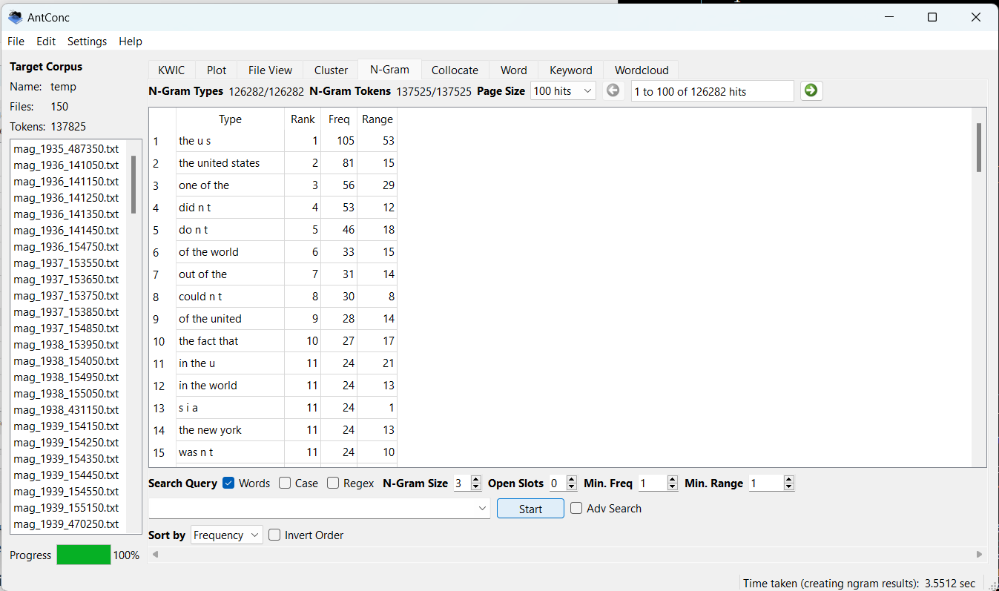
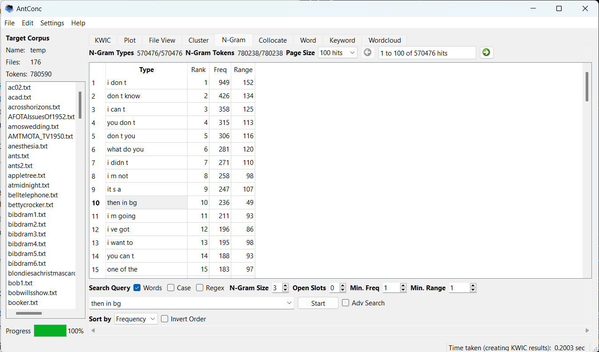
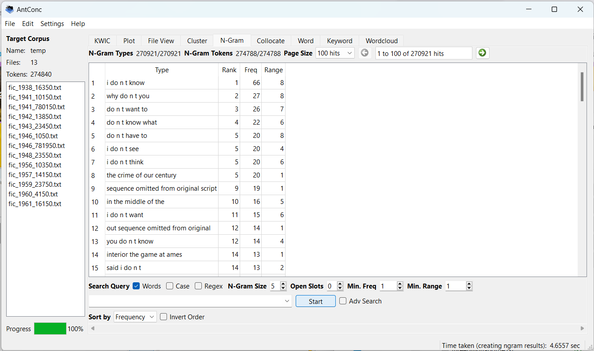
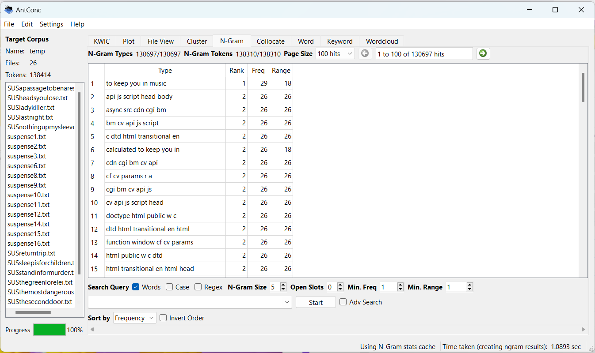

Corpus Analysis Project: Introduction to Digital Humanities


I'd like to compare writings from 1930's through the
1960's to radio plays of around the same time. I expect to find similar
phrasing between the two writings. I ran some 3-grams on a collection of
radio plays and magazine articles of the same period. The 3-gram didn't
reveal much as you can see above.


Since the 3-gram was unrevealing, I tried to refine
my corpus sets to suspense radio plays and fiction writings from 1938 to
1961. Unfortunately, it seems that the radio plays have alot of HTML in
them, so when I ran a 5-gram on the collection there isn't much in the way
of phrases, but more a collection of HTML phrases. It looks as though I may
need to find a differnt collection or refine the data in the current
collection.